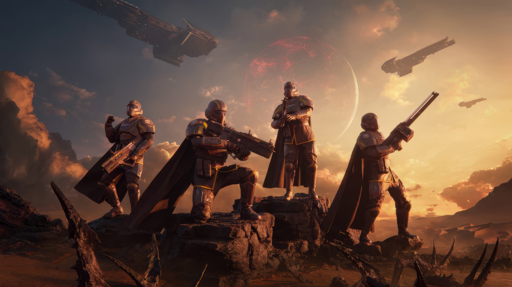

Balatro

Tentang Game
Helldivers 2 berlatar di masa depan, di mana umat manusia berada di bawah pemerintahan galaksi bernama Super Earth. Super Earth dikelola oleh Demokrasi yang Dikuatkan, sebuah sistem yang bertujuan untuk menyebarkan "demokrasi" ke seluruh galaksi, sering kali dengan cara kekerasan.
.
Sebagai bagian dari pasukan elit bernama Helldivers, pemain ditugaskan untuk menyebarkan pengaruh Super Earth dan melawan ancaman dari tiga spesies alien besar yaitu The Bugs, The Cyborgs dan The Illuminate
.
Release Date: 8 Februari 2024
SIZE: 70 GB.
Genres/Tags: Third-Person Shooter , Cooperative Multiplayer , Action, Sci-Fi / Futuristik
Download Links
Minimum System Requirements
- OS: Windows 10
- Processor: Intel Core i7-4790K or AMD Ryzen 5 1500X
- Memory: 8 GB RAM
- Graphics: NVIDIA GeForce GTX 1050 Ti or AMD Radeon RX 470
- Storage: 100 GB available space
Screenshots